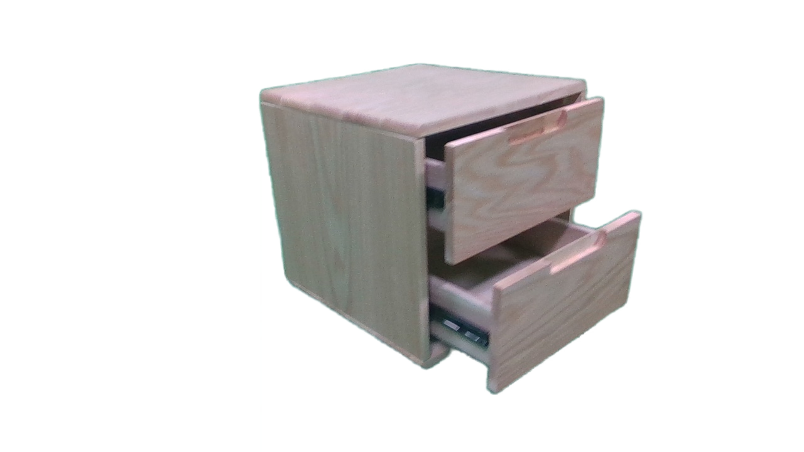
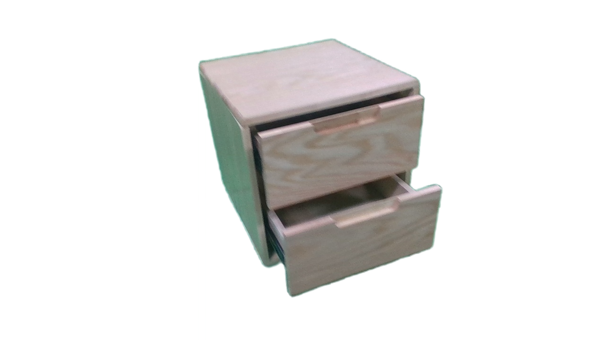
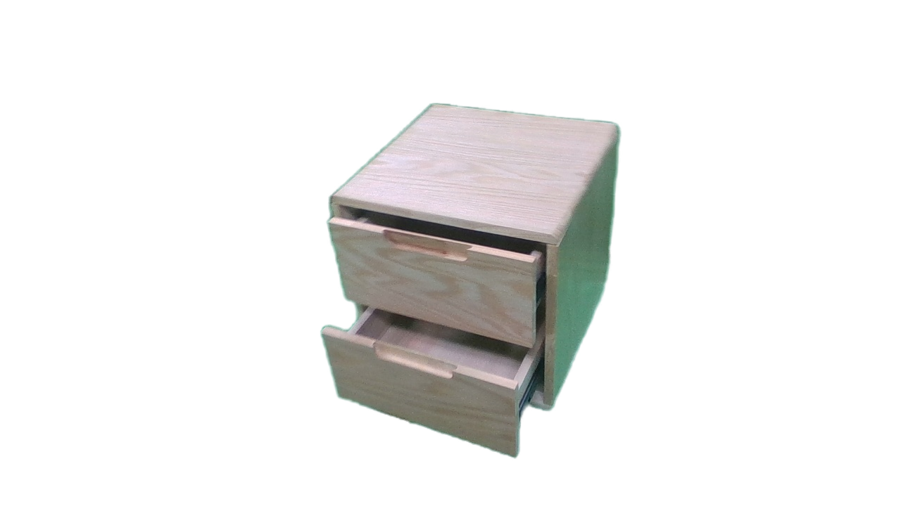
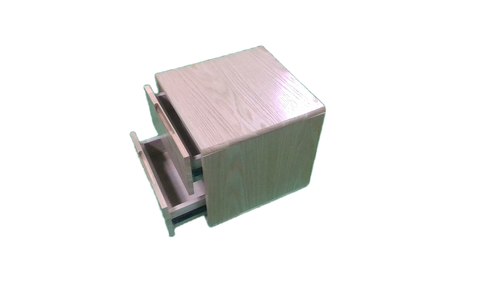
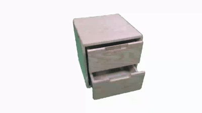
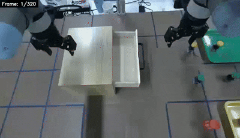
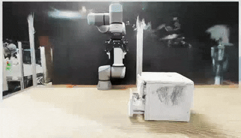

...

Real-World Data Collection


Unified Part-aware Gaussian Field

Real-World interactive Manipulation

Photorealistic Continuous Rendering
for Articulated Objects Manipulation

Articulated Object Manipulation
for Reconstructed Assets